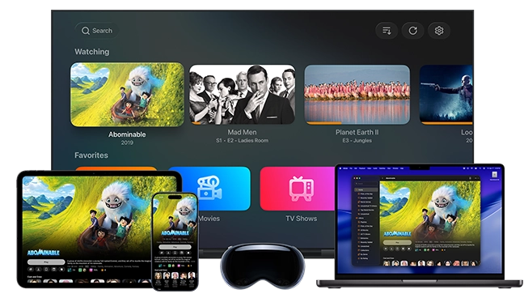

Infuse 用了快一年，从"好看的播放器"到"真离不开它"
从 Infuse 7 追到 8.x，Trakt 同步把散落各设备的观看历史串成了一条线，自动跳过片头片尾成了看剧时的条件反射，字幕外观调完一次就没再碰过——这是一款用时间才能磨出体验的播放器。
装 Infuse 到现在快一年了。最开始是 7.x 版本，一路更到现在的 8.4。当初刷到Infuse官网，挑它的理由很朴素——NAS 里堆了百来部 4K 电影，VLC 界面实在粗糙，想找个长得像样的播放器。那时候觉得它就是个"好看点的视频播放器"，没多想。
现在回头看，当初的判断低估了它。Infuse 的体验不是打开就能感受到的，是用了一段时间之后，某个瞬间你突然发现：哦，原来我已经离不开这些细节了。
越用越顺手的：Trakt 同步把散落的观看历史串成了线
Trakt 是第一个让我觉得"这钱花得值"的功能。iPhone 上看了一半的剧，切到 Apple TV 打开同一集，进度自动续上——这件事听起来很简单，但我之前用 VLC、用 Kodi、用各种奇怪的播放器，没有一个能做到无缝衔接。

Trakt 不只是续看进度。我现在已经习惯了：看完一集，Trakt 自动记一笔；换个设备打开，看过的那些剧自动打勾。之前在 Plex 上看的、在 Emby 上看的，甚至直接在 Apple TV 上播的，所有观看记录现在都汇总在一个地方。有时候翻 Trakt 的年度报告，看着自己这一年追了多少剧、给多少电影打了分，那种成就感是单个播放器给不了的。
而且 Trakt 同步在免费版就能用。这一点我印象很深——Infuse 官方把 Trakt 放在免费功能里，说明它不是拿来当 Pro 版的钩子，而是真的认为"跨设备同步"是播放器该有的基础能力。
有个细节值得提：如果你是用直连模式连 Plex/Emby/Jellyfin，观看历史的同步链会多绕一圈。观看历史先发给媒体服务器，服务器再同步到 Trakt。反过来 Trakt 上标记看过的，不会反写到 Infuse 的本地库——所以想标记看过的话最好直接在 Infuse 里点一下，这样两边都能同步。我踩过这个坑，在 Trakt 网页上标记了一堆"看过"，结果回到 Infuse 里全没显示，后来去Infuse文档翻了一下才明白是同步方向的问题。
越用越烦的：Trakt 免费版限流 + Mac 版菜单栏偶尔失灵
Trakt 免费账号的 API 限额是个隐形门槛。我同时开着 iPhone、iPad、Apple TV 三台设备同步，偶尔会碰到某些历史提交失败的情况。表现就是：在 Apple TV 上看完一集，Trakt 上没记上。去 Trakt 网页查 API 配额，显示刚才触发了限流。等几小时自动恢复了就好，但那种"不知道这次同步有没有成功"的不确定感挺烦的。
Mac 版的菜单栏常驻功能，偶尔会遇到启动后图标不出现的情况。不是每次都复现，大概十次启动会碰到一两次。关掉重开就好，但这种小毛病累积起来会让人觉得不够稳。毕竟当初装 Mac 版就是冲着菜单栏一键唤起 + PiP 小窗模式来的，PiP 用起来真的舒服——视频缩在角落继续放，底下继续写东西，不耽误。
离不开的：自动跳过片头片尾
这个功能是我用 Infuse 之后被"惯坏"的典型。
从 8.4 起，跳过片头片尾从 Pro 版移到了免费版。官方说是大规模的功能下放，我个人觉得这是 Infuse 最聪明的一个决定——因为跳过片头片尾这件事，一旦用过，就真的回不去了。
原理是社区驱动的。IntroDB.app 和 TheIntroDB.org 两个数据库，全球 Infuse 用户共同维护——任何人都可以在 App 里标记某部剧哪一秒是片头、哪一秒是片尾。播放时 Infuse 实时查询（缓存 30 天），匹配上就自动跳过。
热门剧的标记很全，冷门剧可能没有。Infuse 的策略是"尽力而为"——没查到这次就不跳过，但下次播放会再查。我有一部比较小众的英剧，第一次看时没自动跳过片头，第二次看时就跳过了——说明期间有其他用户贡献了标记。这种社区互助的感觉挺好的，不是那种一家独大的封闭生态。
片头、片尾、前情提要、下集预告四种标记可以分别开关。我默认片头片尾和前情提要全开，下集预告关着——有些人喜欢看预告，我个人觉得看完预告反而会忍不住继续刷下一集，然后熬到凌晨。
说个反直觉的事：我之前以为字幕自定义外观是个很重要的功能，调完字体、颜色、描边之后觉得挺满意。但后来发现，我调完那一次就再也没动过。字幕外观是那种"调对了就忘了它存在"的功能。反而跳过片头片尾是每次看剧都在发生的事，它已经变成了我的条件反射——换个平台看剧时，片头响起来我还在等"自动跳过"，等了两秒才反应过来这里没有这个功能。
观感修正：当初高估了 Pro 版的必要性，低估了"时间"的价值
刚装 Infuse 那会，我纠结了好几天要不要买 Pro。觉得花 40 美元买个播放器太夸张了。用了半年之后，我在 Trakt VIP 上花了 10 美元/年，反而没纠结——因为 Trakt API 限额的问题让我觉得这钱花得值。
Infuse Pro 我最终没买，主要是免费版的功能已经覆盖了我的使用场景。Pro 版多出来的本地元数据匹配、强制转码、从外接硬盘流式播放这些功能，我用不到。但我现在理解了为什么有人愿意买——不是 Pro 版多了几个功能，而是 Infuse 的整个产品逻辑就是"愿意为体验付费"。如果你觉得 Trakt 同步是基础功能，觉得跳过片头片尾是应该有的，觉得菜单栏 PiP 模式是正常的，那 Infuse Pro 的定价就不显得贵。
当初低估的是"时间"的价值。Infuse 不会帮你省很多时间，但它帮你省的是"零碎的、重复的、每次看剧都会碰到的小事"的时间——手动拖进度条跳过片头、在不同设备上找上次看到哪了、对着字幕乱码调编码。这些小事单独看都不大，累积起来就是一种"烦躁的惯性"。Infuse 把这些小事都处理掉了，你看剧的时候就只剩看剧这一件事。
去留结论：不会卸载，没有明显信号会换
Infuse 现在在我的设备上是常驻状态。iPhone、iPad、Apple TV、Mac 四台设备的安装包都是从Infuse下载拿的，每天至少开两三次。没有任何信号出现让我觉得该换了。
Trakt 同步如果有一天挂了，我可能会动摇——但 Trakt 是独立服务，跟 Infuse 本身无关。如果社区数据库 IntroDB/TheIntroDB 停止维护，跳过片头片尾功能废掉了，那也只是失去一个功能，不至于卸载 Infuse。
真正可能让我换的信号只有一个：Infuse 停止更新、或者下一代 iOS/Apple TV 不再支持它。但从目前的更新节奏看，Infuse 8 还在持续迭代功能（8.4 刚下放了跳过片头片尾），8.5、9.x 还在路上。所以短期内不用担心。
最后说一句：Infuse 不是那种让你"哇"一声惊艳的播放器。它的好是用时间磨出来的——每一次无缝续看、每一次自动跳过片头、每一次字幕默认就显示正确，这些小事累积起来，到了某个点你会发现：你已经不习惯用别的播放器了。
这可能就是"长期使用"和"上手测评"最大的区别。上手测评看的是第一眼的印象，长期使用看的是时间帮你筛选出来的、真正重要的那些细节。Infuse 是后者。
这套资料在三个仓库都能拿到——GitHub 主仓库、Gitee 国内镜像、GitCode 备用备份——总有一个能让你查到想看的条目和标记样本。